01. LangChain 입문 — What is LangChain · Model · Memory
이 문서는 LangChain이 무엇이고 왜 등장했는지부터 시작해서, LangChain을 구성하는 두 핵심 축인
Model(두뇌 역할)과 Memory(대화 맥락 유지), 그리고 그 위에 얹히는
LangGraph(오케스트레이션) · LangSmith(추적·평가·모니터링)까지 한 번에 훑는
입문 강의 자료입니다. 실습 노트북(01/01.html, 01/02.html)을 열기 전에 개념을 먼저
잡는 용도로 읽어보세요.
1장. What is LangChain?
이 장에서는 LangChain이 무엇인지, 애플리케이션과 Agent가 어떻게 다른지, Agent는 어떤 부품으로 이루어져 어떻게 움직이는지, 그리고 LangChain이 v0에서 v1으로 오면서 무엇이 바뀌었고 어떤 철학으로 만들어졌는지를 살펴봅니다.
1.1 LangChain이란 무엇인가?
아래는 LangChain의 위치를 보여주는 다이어그램입니다.
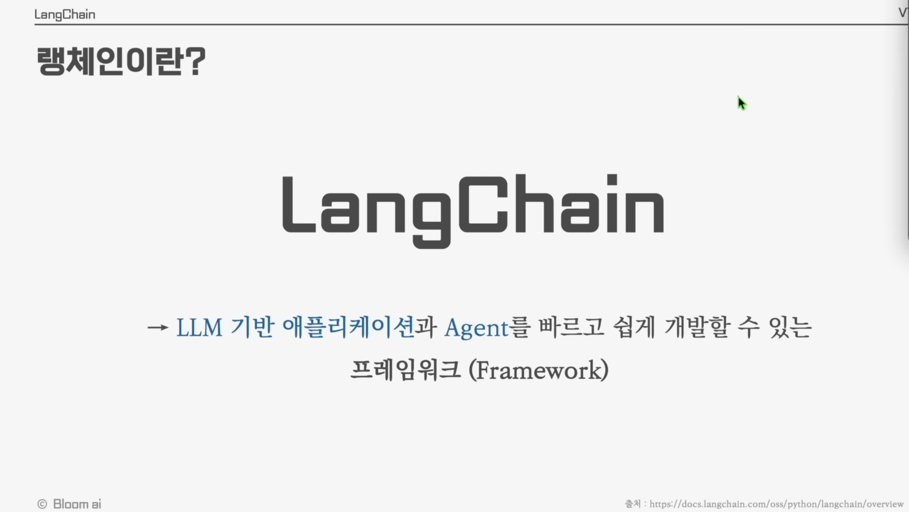
LangChain은 LLM(대형 언어 모델)을 기반으로 한 애플리케이션과 Agent를 빠르고 쉽게 개발할 수 있도록 도와주는 프레임워크(Framework)입니다.
- LLM 호출, 프롬프트 관리, 외부 데이터 연결, 메모리 관리, 도구(Tool) 사용 등 LLM 애플리케이션 개발에 반복적으로 필요한 기능을 표준화된 인터페이스로 제공합니다.
- 덕분에 개발자는 인프라 작업 대신 비즈니스 로직과 Agent 설계에 집중할 수 있습니다.
1.2 LLM 애플리케이션 vs LLM Agent
LangChain으로 만들 수 있는 시스템은 크게 두 가지 형태로 나눌 수 있습니다.
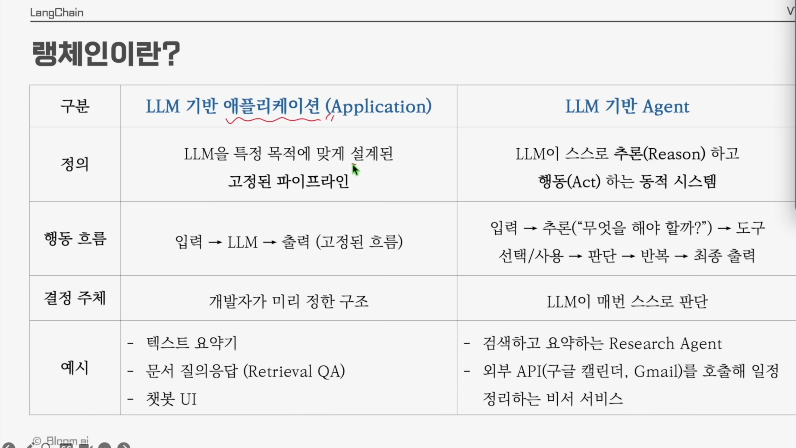
| 구분 | LLM 기반 애플리케이션 (Application) | LLM 기반 Agent |
|---|---|---|
| 정의 | LLM을 특정 목적에 맞게 설계된 고정된 파이프라인 | LLM이 스스로 추론(Reason)하고 행동(Act)하는 동적 시스템 |
| 행동 흐름 | 입력 → LLM → 출력 (고정된 흐름) | 입력 → 추론("무엇을 해야 할까?") → 도구 선택/사용 → 판단 → 반복 → 최종 출력 |
| 결정 주체 | 개발자가 미리 정한 구조 | LLM이 매번 스스로 판단 |
| 예시 | 텍스트 요약기 / 문서 질의응답(Retrieval QA) / 챗봇 UI | 검색·요약 Research Agent / 외부 API(구글 캘린더, Gmail)를 호출하는 비서 서비스 |
1.3 Agent의 정의와 구성 요소
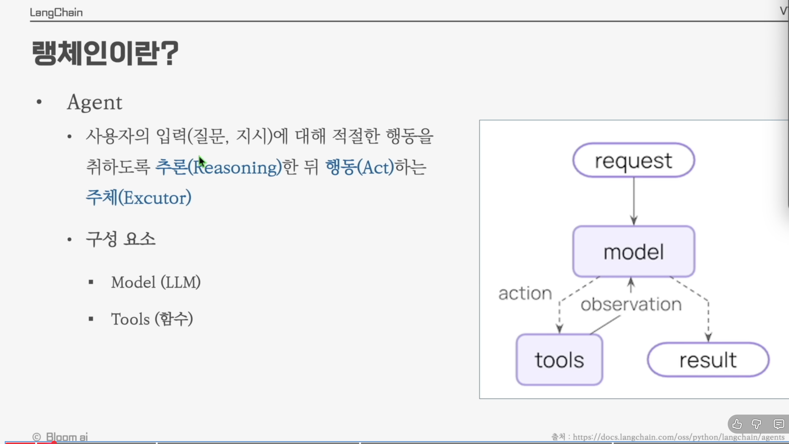
Agent란 사용자의 입력(질문, 지시)에 대해 적절한 행동을 취하도록 추론(Reasoning)한 뒤 행동(Act)하는 주체(Executor)입니다.
Agent의 구성 요소
- Model (LLM) : 추론과 의사결정을 담당하는 두뇌
- Tools (함수) : 실제 행동(검색, 계산, API 호출 등)을 수행하는 손과 발
Agent의 동작 흐름
사용자의 요청이 모델에 전달됨
어떤 도구를 사용할지, 또는 바로 답변할지 추론
선택된 tool을 실행
tool의 실행 결과를 모델에게 다시 전달
충분한 정보가 모일 때까지 반복하다가 최종 답변 생성
1.4 LangChain의 진화 — v0에서 v1으로
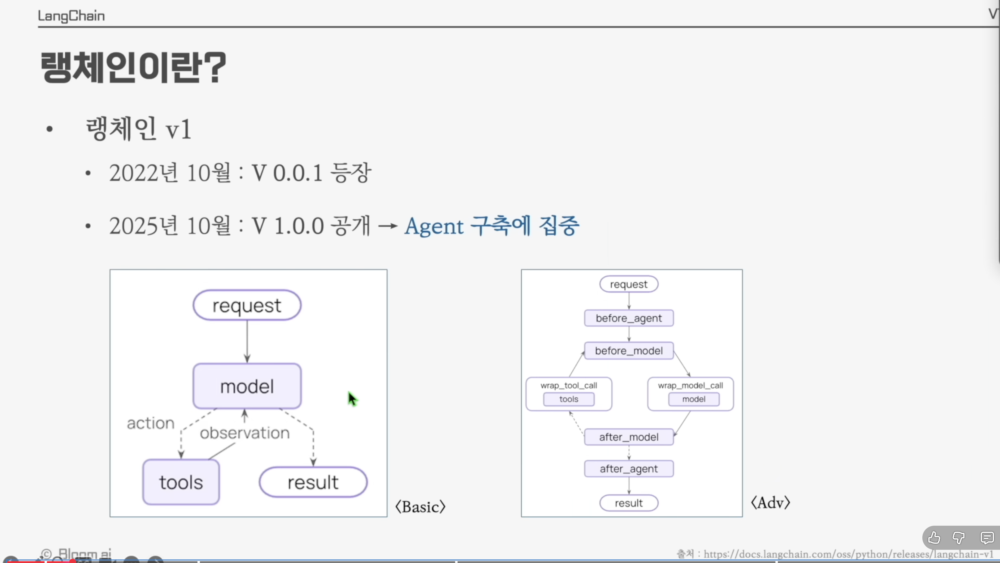
- 2022년 10월 :
v0.0.1등장 → LLM을 "Chain"으로 엮어 사용하는 데 초점 - 2025년 10월 :
v1.0.0공개 → Agent 구축에 집중
Basic 구조 vs Advanced 구조
Basic 구조는 요청이 들어와서 답이 나가기까지 단순한 한 방향 흐름입니다.
Advanced 구조는 각 단계 앞뒤에 훅(hook)을 끼워 넣어 더 정교하게 제어할 수 있습니다.
before_agent— Agent 시작 전에 실행before_model— 모델 호출 전에 실행wrap_model_call— 모델 호출을 감싸서 실행 (전/후 처리)wrap_tool_call— 도구 호출을 감싸서 실행 (전/후 처리)after_model— 모델 호출 후에 실행after_agent— Agent 종료 후에 실행
before_model)", "도구를 부르고 나서 결과 검사(wrap_tool_call)"처럼 각 단계
앞뒤에서 검증·로깅·가공을 끼워 넣을 수 있죠.
1.5 LangChain의 철학
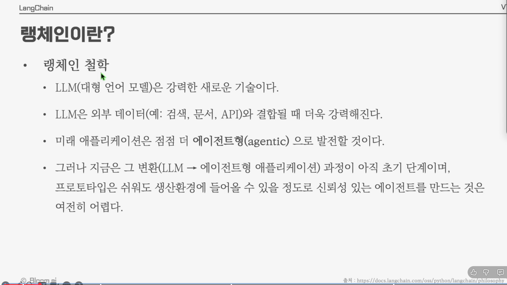
LangChain이 왜 만들어졌는지를 이해하면, 이 도구를 어떤 사고방식으로 써야 하는지가 분명해집니다.
- LLM(대형 언어 모델)은 강력한 새로운 기술이다.
- LLM은 외부 데이터(예: 검색, 문서, API)와 결합될 때 더욱 강력해진다.
- 미래 애플리케이션은 점점 더 에이전트형(agentic)으로 발전할 것이다.
- 그러나 지금은 그 변환(LLM → 에이전트형 애플리케이션) 과정이 아직 초기 단계이며, 프로토타입은 쉬워도 생산 환경에 들어갈 수 있을 정도로 신뢰성 있는 에이전트를 만드는 것은 여전히 어렵다.
2장. Model
LLM 기반 애플리케이션과 Agent의 두뇌 역할을 하는 것이 Model입니다. 본 장에서는 Model의 역할, 텍스트 생성 방법, 그리고 구조화된 답변 생성을 다룹니다.
2.1 Model의 역할
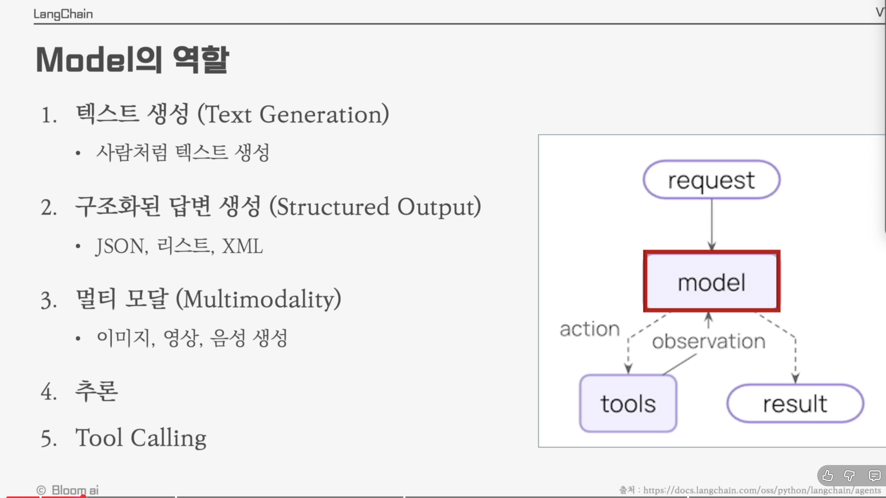
LangChain에서 Model은 다음과 같은 다섯 가지 역할을 수행합니다.
- 텍스트 생성 (Text Generation) — 사람처럼 자연스럽게 텍스트 생성
- 구조화된 답변 생성 (Structured Output) — JSON, 리스트, XML 등 정해진 포맷으로 출력
- 멀티 모달 (Multimodality) — 이미지, 영상, 음성 생성
- 추론 (Reasoning) — 복잡한 문제를 단계적으로 풀어냄
- Tool Calling — 외부 함수/API를 호출
2.2 텍스트 생성 (Text Generation)
2.2.1 가장 기본적인 사용법
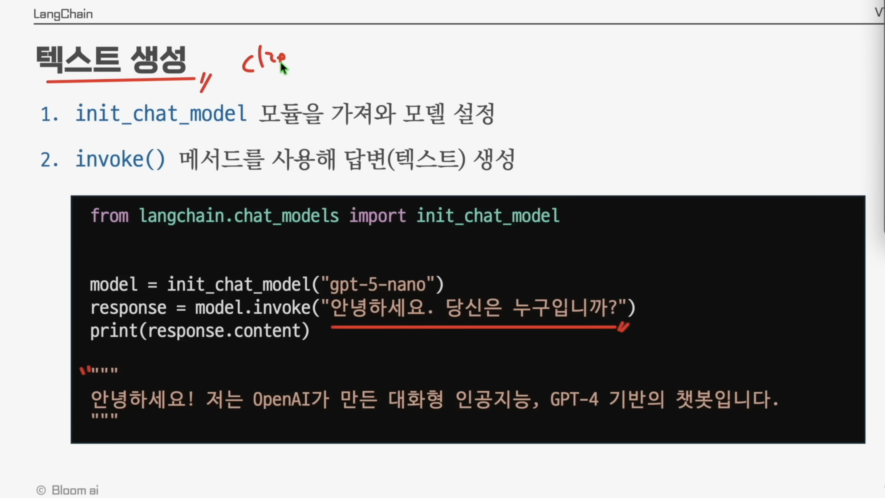
LangChain에서 모델을 사용하는 흐름은 단 두 줄입니다.
init_chat_model모듈을 가져와 모델을 설정invoke()메서드를 사용해 답변(텍스트) 생성
init_chat_model이 바로 그 만능
리모컨입니다. 속에 있는 모델이 OpenAI든, Anthropic이든, Google이든 우리는 항상 똑같은 버튼
(invoke, stream, batch)만 누르면 됩니다.
from langchain.chat_models import init_chat_model
model = init_chat_model("gpt-5-nano")
response = model.invoke("안녕하세요. 당신은 누구입니까?")
print(response.content)안녕하세요! 저는 OpenAI가 만든 대화형 인공지능, GPT-4 기반의 챗봇입니다.
invoke는 영어로 "부르다, 선포하다"라는 뜻으로, 모델을 한 번 호출해 응답을 받는 동기
방식입니다.
2.2.2 init_chat_model 파라미터
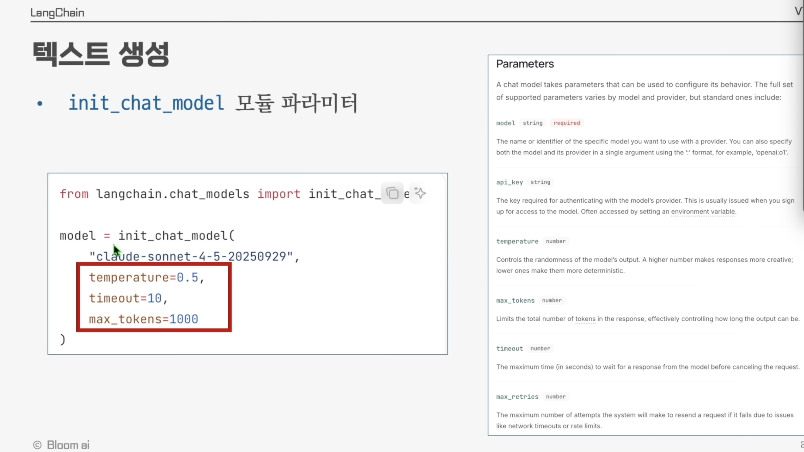
모델은 다양한 파라미터로 동작을 조절할 수 있습니다.
from langchain.chat_models import init_chat_model
model = init_chat_model(
"claude-sonnet-4-5-20250929",
temperature=0.5,
timeout=10,
max_tokens=1000
)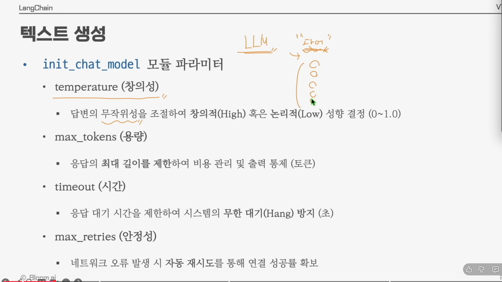
주요 파라미터 정리
| 파라미터 | 의미 | 설명 |
|---|---|---|
temperature | 창의성 | 답변의 무작위성을 조절해 창의적(High) 혹은 논리적(Low) 성향 결정 (0 ~ 1.0) |
max_tokens | 용량 | 응답의 최대 길이를 제한하여 비용 관리 및 출력 통제 (단위: 토큰) |
timeout | 시간 | 응답 대기 시간을 제한하여 시스템의 무한 대기(Hang) 방지 (단위: 초) |
max_retries | 안정성 | 네트워크 오류 발생 시 자동 재시도를 통해 연결 성공률 확보 |
temperature=0이면 거의 같은 답이, temperature=1이면 매번 다른
답이 나옵니다.
2.2.3 invoke 외의 호출 방식 — stream과 batch
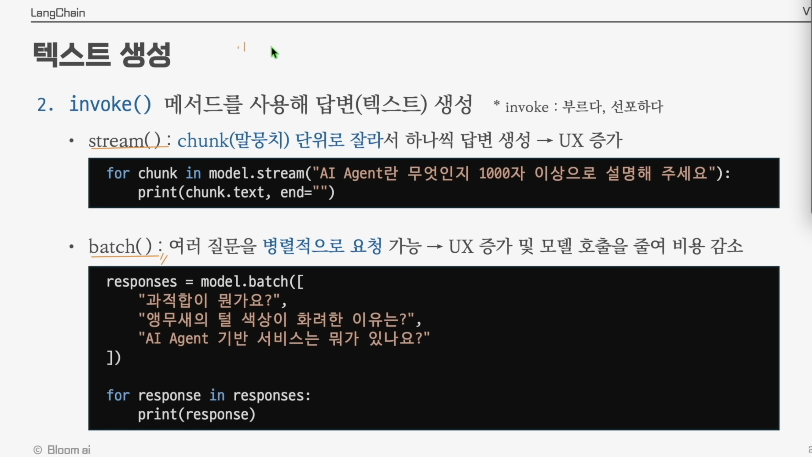
invoke()는 답변이 모두 생성될 때까지 기다리는 방식입니다. 그 외에도 두 가지 호출 방식이 더 있습니다.
① stream() — 청크(말뭉치) 단위로 잘라서 답변 생성
invoke()는 2L 물통에 물을 다 채운 뒤 통째로 건네주는 방식입니다. 다 찰 때까지
손님은 빈손으로 기다려야 하죠. stream()은 정수기입니다. 버튼을 누르면 물이
나오는 즉시 컵으로 받아 바로 마실 수 있습니다. ChatGPT에서 글자가 타닥타닥 흐르듯 나타나는 것이
바로 이 방식이에요.
답변을 한 글자씩(또는 토큰 단위로) 흘려보내며 사용자에게 즉시 표시할 수 있어 UX가 좋아집니다.
for chunk in model.stream("AI Agent란 무엇인지 1000자 이상으로 설명해 주세요"):
print(chunk.text, end="")② batch() — 여러 질문을 병렬적으로 요청
batch()가 바로 이 "한꺼번에 주문"입니다.
여러 개의 입력을 동시에 처리하여 응답 시간을 줄이고, 모델 호출 횟수를 줄여 비용을 감소시킵니다.
responses = model.batch([
"과적합이 뭔가요?",
"앵무새의 털 색상이 화려한 이유는?",
"AI Agent 기반 서비스는 뭐가 있나요?"
])
for response in responses:
print(response)- invoke : 단일 요청, 즉시 답변 필요
- stream : 챗봇 UI처럼 실시간 출력이 중요할 때
- batch : 평가, 데이터 가공 등 다수 입력을 한 번에 처리할 때
2.3 구조화된 답변 생성 (Structured Output)
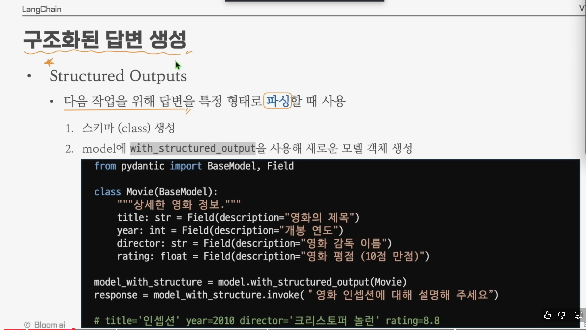
2.3.1 Structured Output이 필요한 이유
LLM의 기본 답변은 자연어 문장입니다. 하지만 실제 애플리케이션에서는 다음 작업을 위해 답변을 특정 형태로 파싱해야 할 때가 많습니다(예: DB 저장, API 응답, 후속 함수 호출). 이때 사용하는 것이 Structured Output입니다.
사용 절차
원하는 출력 구조를 Pydantic 클래스로 정의
모델에 적용해 새로운 모델 객체 생성
from pydantic import BaseModel, Field
class Movie(BaseModel):
"""상세한 영화 정보."""
title: str = Field(description="영화의 제목")
year: int = Field(description="개봉 연도")
director: str = Field(description="영화 감독 이름")
rating: float = Field(description="영화 평점 (10점 만점)")
model_with_structure = model.with_structured_output(Movie)
response = model_with_structure.invoke("영화 인셉션에 대해 설명해 주세요")title='인셉션' year=2010 director='크리스토퍼 놀런' rating=8.8
2.3.2 스키마 생성 — Pydantic 활용
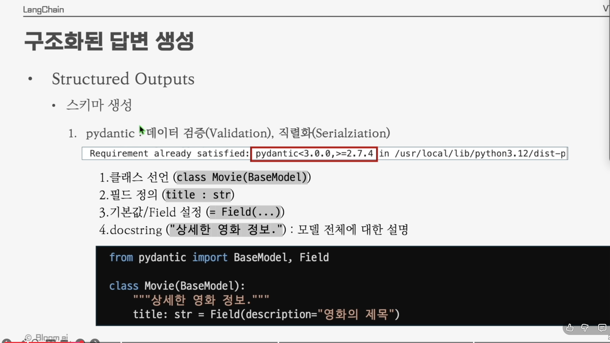
스키마는 Pydantic 라이브러리로 정의합니다. Pydantic은 데이터 검증(Validation)과 직렬화(Serialization)를 모두 제공합니다.
# pydantic >= 2.7.4 권장
pip install "pydantic>=3.0.0,>=2.7.4"Pydantic 모델의 4가지 구성 요소
- 클래스 선언 :
class Movie(BaseModel) - 필드 정의 :
title : str - 기본값 / Field 설정 :
= Field(...) - docstring :
"""상세한 영화 정보."""→ 모델 전체에 대한 설명 (LLM이 참고)
from pydantic import BaseModel, Field
class Movie(BaseModel):
"""상세한 영화 정보."""
title: str = Field(description="영화의 제목")Field(description=...)의 설명은 LLM에게 이 필드에 어떤 값을 채워야 하는지
알려주는 힌트로 사용됩니다.
2.3.3 JSON Schema vs Pydantic
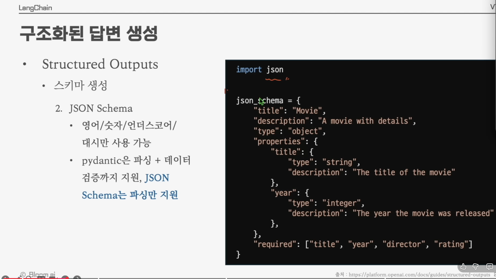
스키마는 JSON Schema 형식으로도 정의할 수 있습니다.
import json
json_schema = {
"title": "Movie",
"description": "A movie with details",
"type": "object",
"properties": {
"title": {
"type": "string",
"description": "The title of the movie"
},
"year": {
"type": "integer",
"description": "The year the movie was released"
},
},
"required": ["title", "year", "director", "rating"],
}Pydantic vs JSON Schema 비교
| 특징 | JSON Schema | Pydantic |
|---|---|---|
| 사용 가능 문자 | 영어 / 숫자 / 언더스코어 / 대시 | 파이썬 식별자 규칙 |
| 역할 | 데이터 구조의 명세서 (문서화용) | 데이터의 실행기 및 검사기 (코드용) |
| 언어 | 언어 독립적 (JSON 포맷) | 파이썬 (Python Class 기반) |
| 검증 시점 | 별도의 검증 라이브러리 필요 | 객체를 생성하는 순간 즉시 검증 |
| 지원 범위 | 파싱만 지원 | 파싱 + 데이터 검증 모두 지원 |
| 주요 용도 | API 문서(Swagger), 데이터 규격 공유 | FastAPI 서버, LangChain 데이터 모델링 |
Pydantic이 데이터 검증(Validation)을 해준다는 말은, 단순히 데이터의 "모양(구조)"만 정의하는 것이 아니라, "실제로 들어온 데이터가 내가 정한 규칙에 맞는지 실시간으로 검사하고, 틀리면 에러를 내거나 올바른 타입으로 바꿔준다"는 뜻입니다.
비유하자면, JSON Schema는 "이 서류 양식은 이름(문자), 나이(숫자)로 구성되어야 함"이라는 설명서이고, Pydantic은 그 서류를 받자마자 "나이 칸에 문자가 써있네? 다시 써와!"라고 잡아내는 현장 검사원과 같습니다.
① 예시 코드로 보는 차이
만약 우리가 '나이'는 0세 이상이어야 하고, '이메일'은 형식에 맞아야 한다는 규칙을 정했다고 합시다.
from pydantic import BaseModel, Field, EmailStr, ValidationError
# 1. Pydantic 모델 정의 (규칙 세우기)
class User(BaseModel):
name: str # 이름은 반드시 문자열이어야 함
age: int = Field(ge=0, le=120) # 나이는 0 이상 120 이하의 정수여야 함
email: EmailStr # 이메일 형식이어야 함 (pydantic[email] 설치 필요)
# 2. 올바른 데이터 입력 (정상 작동)
user1 = User(name="Alice", age=25, email="alice@example.com")
print(user1.age) # 25
# 3. 잘못된 데이터 입력 (검증 기능 작동!)
try:
user2 = User(name="Bob", age=-5, email="not-an-email")
except ValidationError as e:
print("검증 에러 발생!")
print(e)② Pydantic이 해주는 구체적인 일들
가. 타입 강제 변환 (Type Coercion) — 데이터가 살짝 틀려도 말이 되면 알아서 고쳐줍니다.
- 입력:
age="25"(문자열) - 결과: Pydantic이
25(정수)로 자동 변환해서 저장합니다. (JSON Schema는 그냥 틀렸다고만 합니다.)
나. 값의 범위 및 제약 사항 검사 — 단순히 "숫자다"를 넘어 "10보다 커야 한다", "글자 수가 5글자 이상이어야 한다" 같은 세밀한 검사를 수행합니다.
Field(min_length=2): 이름은 최소 2글자 이상이어야 함.
다. 복잡한 구조 검증 — 리스트 안에 특정 객체가 들어있는 구조 등 복잡한 중첩 데이터도 한꺼번에 검사합니다.
③ 결론 — 왜 Pydantic을 쓰는가?
LangChain에서 Pydantic을 쓰는 이유는 LLM이 내뱉는 불안정한 텍스트 데이터를 우리가 원하는 깨끗하고 정확한 파이썬 객체로 안전하게 변환하기 위해서입니다. 검증에 실패하면 바로 에러를 내주기 때문에 프로그램이 엉뚱한 데이터로 돌아가는 것을 막아줍니다.
3장. Memory
LLM은 기본적으로 이전 대화를 기억하지 못합니다(stateless). 따라서 챗봇처럼 맥락을 유지하는 애플리케이션을 만들려면 직접 대화 기록을 관리해야 합니다. 본 장에서는 LangChain에서 메모리를 어떻게 구현하는지 다룹니다.
3.1 메시지 구성 요소
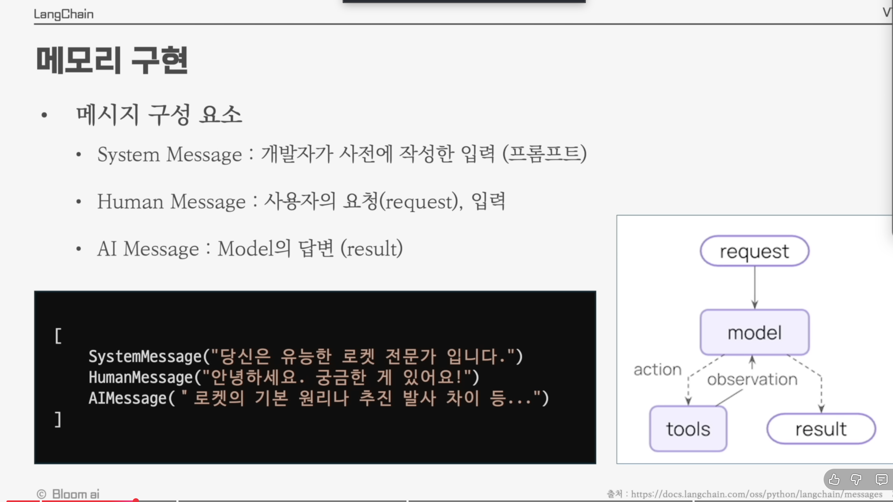
LangChain에서 LLM에 전달하는 입력은 메시지(Message)의 리스트입니다. 메시지의 종류는 크게 세 가지입니다.
| 메시지 종류 | 역할 |
|---|---|
| System Message | 개발자가 사전에 작성한 입력 (프롬프트, 페르소나) |
| Human Message | 사용자의 요청(request), 입력 |
| AI Message | Model의 답변 (result) |
[
SystemMessage("당신은 유능한 로켓 전문가 입니다."),
HumanMessage("안녕하세요. 궁금한 게 있어요!"),
AIMessage("로켓의 기본 원리나 추진 발사 차이 등...")
]3.2 예시 코드 1 — Message 객체 사용
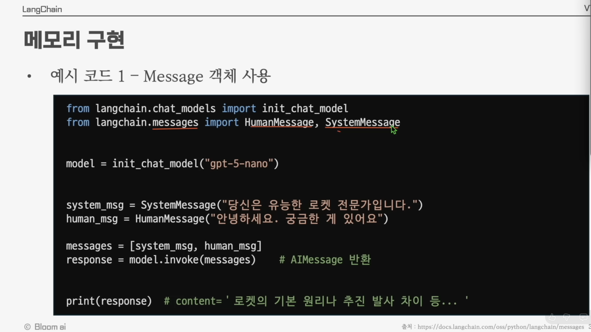
LangChain의 메시지 클래스(SystemMessage, HumanMessage)를 사용하는 가장 기본적인
방식입니다.
messages 리스트가 바로 이 회의록입니다.
from langchain.chat_models import init_chat_model
from langchain.messages import HumanMessage, SystemMessage
model = init_chat_model("gpt-5-nano")
system_msg = SystemMessage("당신은 유능한 로켓 전문가입니다.")
human_msg = HumanMessage("안녕하세요. 궁금한 게 있어요")
messages = [system_msg, human_msg]
response = model.invoke(messages) # AIMessage 반환
print(response)content='로켓의 기본 원리 추진 발사 차이 등... '
invoke에 단일 문자열 대신 메시지 리스트를 넘길 수 있고, 이때
모델은 전체 대화 맥락을 바탕으로 응답합니다.
3.3 예시 코드 2 — 딕셔너리 포맷 (OpenAI 스타일)
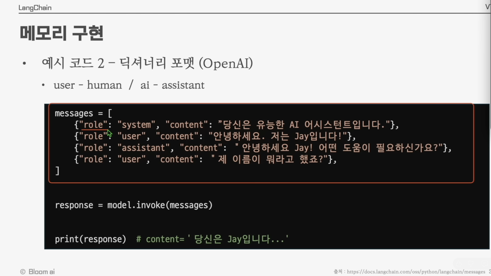
OpenAI API와 동일한 딕셔너리 형식으로도 메시지를 전달할 수 있습니다.
Role 매핑
user↔humanassistant↔aisystem↔system
messages = [
{"role": "system", "content": "당신은 유능한 AI 어시스턴트입니다."},
{"role": "user", "content": "안녕하세요. 저는 Jay입니다!"},
{"role": "assistant", "content": "안녕하세요 Jay! 어떤 도움이 필요하신가요?"},
{"role": "user", "content": "제 이름이 뭐라고 했죠?"},
]
response = model.invoke(messages)
print(response)content='당신은 Jay입니다...'
3.4 LangGraph
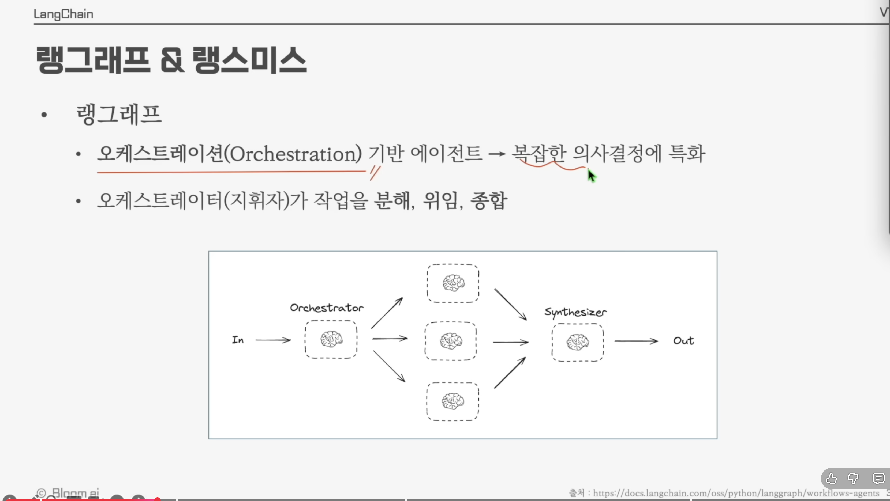
LangGraph는 오케스트레이션(Orchestration) 기반 에이전트 프레임워크로, 복잡한 의사결정에 특화되어 있습니다.
- 오케스트레이터(지휘자)가 작업을 분해(decompose) → 위임(delegate) → 종합(synthesize)하는 흐름을 그래프로 표현합니다.
- 여러 개의 LLM/도구 노드를 노드(node)와 엣지(edge)로 연결하여 분기·반복·병렬 처리가 가능한 워크플로우를 구축할 수 있습니다.
┌──> 🧠 ──┐
In ─> Orchestrator ──> 🧠 ──> Synthesizer ─> Out
└──> 🧠 ──┘Agent가 단순한 루프(loop)라면, LangGraph는 그래프 형태의 자유로운 흐름
제어가 가능한 상위 레벨 도구라고 이해하면 됩니다. 메모리(상태) 또한 그래프의 노드 사이에서
공유·전달되며, 본격적인 멀티턴 에이전트는 LangGraph 위에서 구현하게 됩니다.
3.5 LangSmith
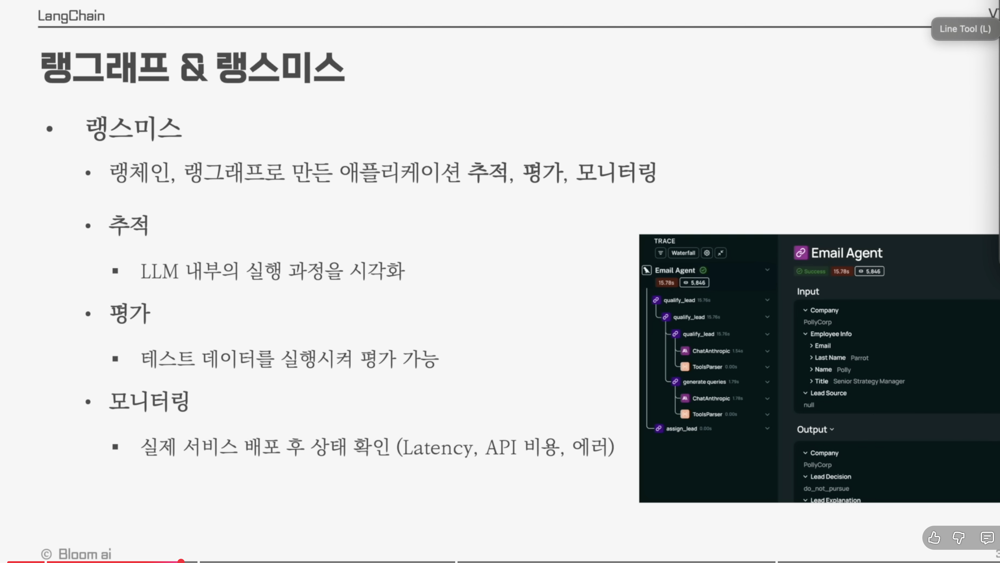
LangSmith는 랭체인·랭그래프로 만든 애플리케이션을 추적·평가·모니터링할 수 있도록 도와주는 도구입니다.
주요 기능
| 기능 | 설명 |
|---|---|
| 추적 | LLM 내부의 실행 과정을 시각화 (어떤 프롬프트가 어떤 응답을 만들었는지) |
| 평가 | 테스트 데이터를 실행시켜 모델/에이전트 성능을 평가 가능 |
| 모니터링 | 실제 서비스 배포 후 상태 확인 (Latency, API 비용, 에러) |
📚 1장 정리
- LangChain은 LLM 애플리케이션과 Agent를 빠르게 만들 수 있는 프레임워크다.
- Agent는 추론(Reason) + 행동(Act)을 반복하는 주체이며, Model + Tools로 구성된다.
- Model은 다섯 가지 역할(텍스트 생성, 구조화 출력, 멀티모달, 추론, Tool Calling)을
한다.
init_chat_model로 모델 생성,invoke / stream / batch로 호출- Pydantic으로 스키마를 정의해 구조화된 답변을 받을 수 있다.
- Memory는
SystemMessage / HumanMessage / AIMessage의 리스트를 누적·관리하여 구현한다. - 같은 3장 안에서 다룬 LangGraph는 복잡한 오케스트레이션을, LangSmith는 추적·평가·모니터링을 담당한다.